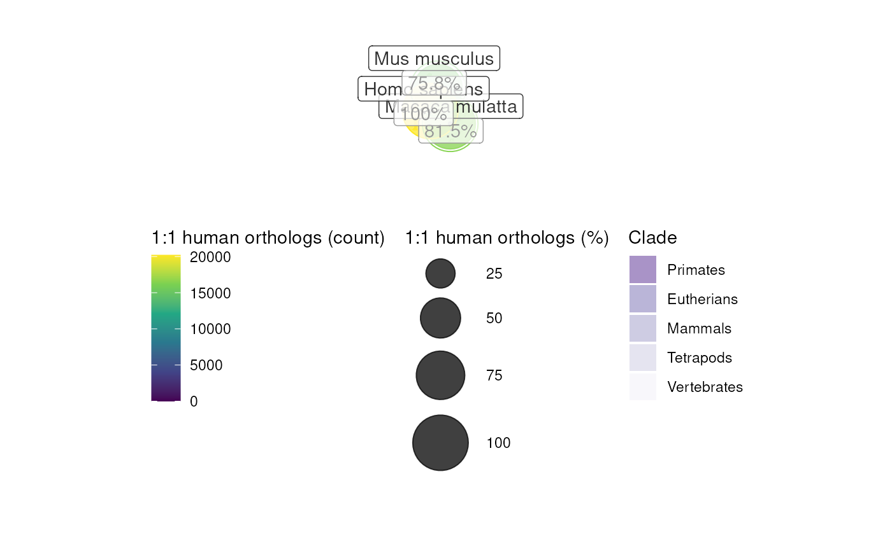

Automatically creates a phylogenetic tree plot annotated with metadata
describing how many orthologous genes each species shares with the
reference_species ("human" by default).
plot_orthotree(
tree = NULL,
orth_report = NULL,
species = NULL,
method = c("babelgene", "homologene", "gprofiler"),
tree_source = "timetree",
non121_strategy = "drop_both_species",
reference_species = "human",
clades = list(Primates = c("Homo sapiens", "Macaca mulatta"), Eutherians =
c("Homo sapiens", "Mus musculus", "Bos taurus"), Mammals = c("Homo sapiens",
"Mus musculus", "Bos taurus", "Ornithorhynchus anatinus", "Monodelphis domestica"),
Tetrapods = c("Homo sapiens", "Mus musculus", "Gallus gallus", "Anolis carolinensis",
"Xenopus tropicalis"), Vertebrates = c("Homo sapiens", "Mus musculus",
"Gallus gallus", "Anolis carolinensis", "Xenopus tropicalis", "Danio rerio"),
Invertebrates = c("Drosophila melanogaster",
"Caenorhabditis elegans")),
clades_rotate = list(),
scaling_factor = NULL,
show_plot = TRUE,
save_paths = c(tempfile(fileext = ".ggtree.pdf"), tempfile(fileext = ".ggtree.png")),
width = 15,
height = width,
mc.cores = 1,
verbose = TRUE
)A phylogenetic tree of class phylo. If no tree
is provided (NULL) a 100-way multiz tree will be imported from
UCSC Genome Browser.
An ortholog report from one or more species generated by report_orthologs.
Species to include in the final plot.
If NULL, then all species from the given database (method)
will be included (via map_species),
so long as they also exist in the tree.
R package to use for gene mapping:
"gprofiler" : Slower but more species and genes.
"homologene" : Faster but fewer species and genes.
"babelgene" : Faster but fewer species and genes.
Also gives consensus scores for each gene mapping based on a
several different data sources.
Can be one of the following:
"timetree2022":
Import and prune the
TimeTree >147k species phylogenetic tree. Can also simply type "timetree".
"timetree2015":
Import and prune the
TimeTree >50k species phylogenetic tree.
"OmaDB":
Construct a tree from OMA
(Orthologous Matrix browser) via the getTaxonomy function.
NOTE: Does not contain branch lengths,
and therefore may have limited utility.
"UCSC":
Import and prune the
UCSC 100-way alignment phylogenetic tree (hg38 version).
"<path>":
Read a tree from a newick text file
from a local or remote URL using read.tree.
How to handle genes that don't have
1:1 mappings between input_species:output_species.
Options include:
"drop_both_species" or "dbs" or 1 :
Drop genes that have duplicate
mappings in either the input_species or output_species
(DEFAULT).
"drop_input_species" or "dis" or 2 :
Only drop genes that have duplicate
mappings in the input_species.
"drop_output_species" or "dos" or 3 :
Only drop genes that have duplicate
mappings in the output_species.
"keep_both_species" or "kbs" or 4 :
Keep all genes regardless of whether
they have duplicate mappings in either species.
"keep_popular" or "kp" or 5 :
Return only the most "popular" interspecies ortholog mappings.
This procedure tends to yield a greater number of returned genes
but at the cost of many of them not being true biological 1:1 orthologs.
"sum","mean","median","min" or "max" :
When gene_df is a matrix and gene_output="rownames",
these options will aggregate many-to-one gene mappings
(input_species-to-output_species)
after dropping any duplicate genes in the output_species.
Reference species.
A named list of clades each containing a character vector of species used to define the respective clade using MRCA.
A list of clades to rotate (via rotate), each containing a character vector of species used to define the respective clade using MRCA.
How much to scale y-axis parameters (e.g. offset) by.
Whether to print the final tree plot.
Paths to save plot to.
Saved plot width.
Saved plot height.
Number of cores to parallelise different steps with.
Print messages.
A list containing:
plot : Annotated ggtree object.
tree : The pruned, standardised phylogenetic tree used in the plot.
orth_report : Ortholog reports for each species against
the reference_species.
metadata : Metadata used in the plot, including silhouette PNG ids from phylopic.
clades : Metadata used for highlighting clades.
method : method used.
reference_species : reference_species used.
save_paths : save_paths to plot.
orthotree <- plot_orthotree(species = c("human","monkey","mouse"))
#> Gathering ortholog reports.
#> Retrieving all genes using: babelgene.
#> Retrieving all organisms available in babelgene.
#> Mapping species name: Homo sapiens
#> 1 organism identified from search: 9606
#> Preparing babelgene::orthologs_df.
#> Gene table with 20,492 rows retrieved.
#> Returning all 20,492 genes from Homo sapiens.
#> Retrieving all genes using: babelgene.
#> Retrieving all organisms available in babelgene.
#> Mapping species name: Homo sapiens
#> 1 organism identified from search: 9606
#> Preparing babelgene::orthologs_df.
#> Gene table with 20,492 rows retrieved.
#> Returning all 20,492 genes from Homo sapiens.
#> --
#>
#> =========== REPORT SUMMARY ===========
#> 20,206 / 20,206 (100%) target_species genes remain after ortholog conversion.
#> 20,206 / 20,206 (100%) reference_species genes remain after ortholog conversion.
#> Retrieving all genes using: babelgene.
#> Retrieving all organisms available in babelgene.
#> Mapping species name: monkey
#> Common name mapping found for monkey
#> 1 organism identified from search: 9544
#> Preparing babelgene::orthologs_df.
#> Gene table with 20,402 rows retrieved.
#> Returning all 20,402 genes from monkey.
#> --
#> --
#> Preparing gene_df.
#> data.frame format detected.
#> Extracting genes from Gene.Symbol.
#> 20,402 genes extracted.
#> Converting monkey ==> Homo sapiens orthologs using: babelgene
#> Retrieving all organisms available in babelgene.
#> Mapping species name: monkey
#> Common name mapping found for monkey
#> 1 organism identified from search: Macaca mulatta
#> Retrieving all organisms available in babelgene.
#> Mapping species name: Homo sapiens
#> 1 organism identified from search: Homo sapiens
#> Retrieving all genes using: babelgene.
#> Retrieving all organisms available in babelgene.
#> Mapping species name: Macaca mulatta
#> 1 organism identified from search: 9544
#> Preparing babelgene::orthologs_df.
#> Gene table with 20,402 rows retrieved.
#> Checking for genes without orthologs in Homo sapiens.
#> Extracting genes from input_gene.
#> 20,402 genes extracted.
#> Dropping 561 NAs of all kinds from input_gene.
#> Extracting genes from ortholog_gene.
#> 19,841 genes extracted.
#> Dropping 107 NAs of all kinds from ortholog_gene.
#> Checking for genes without 1:1 orthologs.
#> Dropping 1,371 genes that have multiple input_gene per ortholog_gene (many:1).
#> Dropping 1,000 genes that have multiple ortholog_gene per input_gene (1:many).
#> Filtering gene_df with gene_map
#> Adding input_gene col to gene_df.
#> Adding ortholog_gene col to gene_df.
#>
#> =========== REPORT SUMMARY ===========
#> Total genes dropped after convert_orthologs :
#> 1,452 / 18,149 (8%)
#> Total genes remaining after convert_orthologs :
#> 16,697 / 18,149 (92%)
#> --
#>
#> =========== REPORT SUMMARY ===========
#> 16,459 / 18,149 (90.69%) target_species genes remain after ortholog conversion.
#> 16,459 / 20,206 (81.46%) reference_species genes remain after ortholog conversion.
#> Retrieving all genes using: babelgene.
#> Retrieving all organisms available in babelgene.
#> Mapping species name: mouse
#> Common name mapping found for mouse
#> 1 organism identified from search: 10090
#> Preparing babelgene::orthologs_df.
#> Gene table with 29,651 rows retrieved.
#> Returning all 29,651 genes from mouse.
#> --
#> --
#> Preparing gene_df.
#> data.frame format detected.
#> Extracting genes from Gene.Symbol.
#> 29,651 genes extracted.
#> Converting mouse ==> Homo sapiens orthologs using: babelgene
#> Retrieving all organisms available in babelgene.
#> Mapping species name: mouse
#> Common name mapping found for mouse
#> 1 organism identified from search: Mus musculus
#> Retrieving all organisms available in babelgene.
#> Mapping species name: Homo sapiens
#> 1 organism identified from search: Homo sapiens
#> Retrieving all genes using: babelgene.
#> Retrieving all organisms available in babelgene.
#> Mapping species name: Mus musculus
#> 1 organism identified from search: 10090
#> Preparing babelgene::orthologs_df.
#> Gene table with 29,651 rows retrieved.
#> Checking for genes without orthologs in Homo sapiens.
#> Extracting genes from input_gene.
#> 29,651 genes extracted.
#> Dropping 37 NAs of all kinds from input_gene.
#> Extracting genes from ortholog_gene.
#> 29,614 genes extracted.
#> Dropping 146 NAs of all kinds from ortholog_gene.
#> Checking for genes without 1:1 orthologs.
#> Dropping 9,286 genes that have multiple input_gene per ortholog_gene (many:1).
#> Dropping 10,297 genes that have multiple ortholog_gene per input_gene (1:many).
#> Filtering gene_df with gene_map
#> Adding input_gene col to gene_df.
#> Adding ortholog_gene col to gene_df.
#>
#> =========== REPORT SUMMARY ===========
#> Total genes dropped after convert_orthologs :
#> 4,602 / 20,075 (23%)
#> Total genes remaining after convert_orthologs :
#> 15,473 / 20,075 (77%)
#> --
#>
#> =========== REPORT SUMMARY ===========
#> 15,314 / 20,075 (76.28%) target_species genes remain after ortholog conversion.
#> 15,314 / 20,206 (75.79%) reference_species genes remain after ortholog conversion.
#> Loading required namespace: phytools
#> Loading required namespace: TreeTools
#> Importing tree from: TimeTree2022
#> Importing cached tree.
#> Standardising tip labels.
#> Mapping 3 species from `species`.
#> Mapping 3 species from tree.
#> --
#> 0/3 (0%) tips dropped from tree due to inability to standardise names with `map_species`.
#> --
#> 0/3 (0%) tips dropped from tree according to overlap with selected `species`.
#> Gathering phylopic silhouettes.
#> Preparing data for 6 clades.
#> Warning: Each clade in `clades` must contain a vector of at least 1 species. Omitting clade: Invertebrates
#> 3 species remaining after metadata preparation.
#> Creating ggtree plot.
#> Saving plot ==> /tmp/RtmpQNLDlX/file219267fc0581.ggtree.pdf
#> Saving plot ==> /tmp/RtmpQNLDlX/file21922635c8c0.ggtree.png
